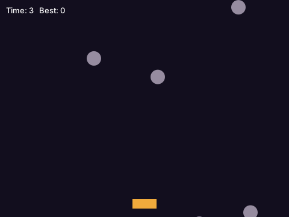

Here, a whole game: rocks fall, and you dodge them with the arrow keys for as long as you can.

dodge.moth
use "game.moth" as game
set width to 480
set height to 360
set player to 220 # where the player is, from the left
set rocks to empty list # each a record with x, y and how fast it falls
set alive to yes
set time_alive to 0
set best to 0
set until_next to 0 # seconds before the next rock
# a new game, when Space is pressed after the last one ended
to pressed with key
if key is "Space" and not alive
set rocks to empty list
set alive to yes
set time_alive to 0
end
end
# each frame, first: what's changed in `seconds`, about a 60th of one
to update with seconds
if not alive
return nothing
end
set time_alive to time_alive + seconds
if game's key_down("Left")
set player to player - 320 * seconds
end
if game's key_down("Right")
set player to player + 320 * seconds
end
set player to largest of (list of 0, smallest of (list of player, width - 40))
set until_next to until_next - seconds
if until_next is at most 0
add (record with x (random number from 0 to width - 24), y -24, speed (random number from 120 to (240 + time_alive * 10) rounded)) to rocks
set until_next to 0.5
end
set falling to empty list
for each rock in rocks
set y of rock to y of rock + speed of rock * seconds
if y of rock is less than height
add rock to falling
end
set hit_across to x of rock + 24 is greater than player and x of rock is less than player + 40
if hit_across and y of rock + 24 is greater than height - 30
set alive to no
set best to largest of (list of best, time_alive)
end
end
set rocks to falling
end
# each frame, then: everything drawn again
to show with canvas
game's colour(canvas, 18, 14, 30)
game's rectangle(canvas, 0, 0, width, height)
game's colour(canvas, 240, 170, 60)
game's rectangle(canvas, player, height - 30, 40, 16)
game's colour(canvas, 150, 140, 160)
for each rock in rocks
game's circle(canvas, x of rock + 12, y of rock + 12, 12)
end
game's colour(canvas, 255, 255, 255)
game's words(canvas, "Time: " + (time_alive rounded) + " Best: " + (best rounded), 10, 10)
if not alive
game's words(canvas, "Hit! Space to play again", 160, 170)
end
end
game's window("Dodge", width, height)
game's on_key(pressed)
game's run_game(update, show)How it works
- **
run_game(update, show)** callsupdateand thenshow, each frame, until the window is closed. Keep what's in the game in variables, change them inupdate, and draw them inshow: no drawing inupdate, no changes inshow. - **
updateis givenseconds**, how long since the last frame. Moving by320 * secondsis 320 pixels a second however fast the computer is. - **
key_down("Left")says whether a key is held now, for moving;on_key** calls a function once for each key pressed, for things that happen once, as starting again. - **
showis given a canvas** to draw on, from the window's top left:colourfor what's drawn next, thenrectangle,circle,line,words, anddraw_imagefor a picture fromimage("ship.png"). random number from 0 to 456is a whole number, each as likely; the rocks fall faster the longer you last.
Play it
A program with a window is built with --allow-libraries, which lets it use the system's own (GTK on Linux):
$ moth run --allow-libraries dodge.moth &
$ moth build dodge.moth --allow-libraries
compiled dodge.moth to machine code for Linux -> dodge (... bytes)dodge (dodge.exe on Windows) is the game, to give to a friend: it needs nothing installed.
See also
- game.moth: the mouse (
mouse_x,mouse_down,on_click), pictures (image,draw_image_sized) and sounds (sound("boom.wav")). - catch.moth, another game, with the mouse too; and ui.moth for windows of buttons and text boxes.